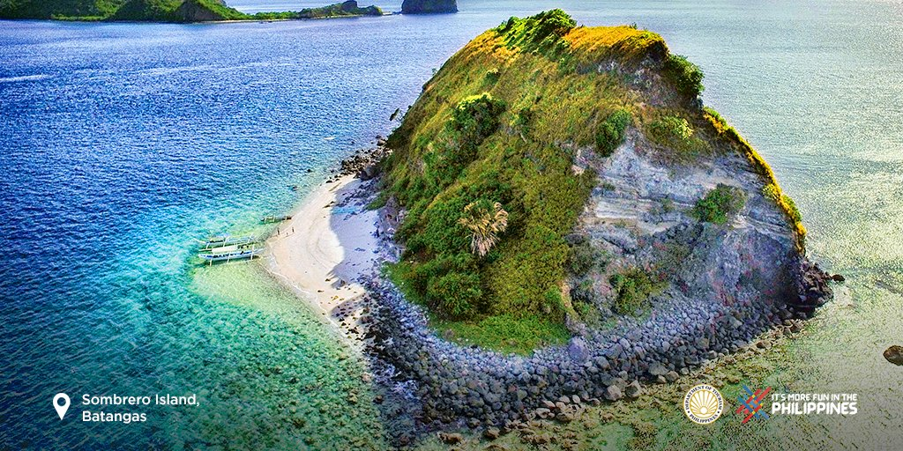

Diving Spots
Diving Spots in Mabini
Anilao, located in Mabini, Batangas, Philippines, is renowned as one of the world's premier diving destinations, particularly for macro photography and critter hunting. It's often dubbed the "Nudibranch Capital of the World" due to its incredible diversity of sea slugs, with over 600 different species identified. The area boasts around 40 dive sites, offering a wide range of underwater experiences, from vibrant coral gardens and walls to unique muck diving opportunities.
Sombrero Island is a small, uninhabited island located off the eastern tip of Maricaban Island, which is part of the municipality of Tingloy in Batangas, Philippines. Its name, "Sombrero," is Spanish and Filipino for "hat," a nod to its distinctive hat-like shape.

